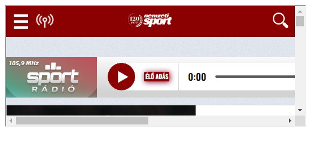
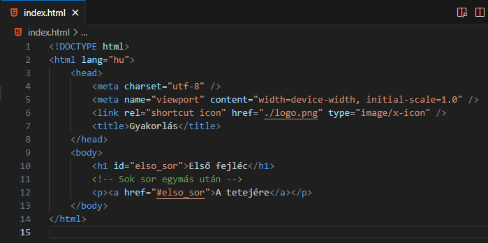

HTML - Hivatkozások
- Hivatkozások, linkek (link) minden weboldalon találhatóak. Ezek segítségével navigálhatunk a különböző oldalak között. Egyfajta horgonyok, amelyek "beleakaszkodnak" a másik oldalba. Ezért a jelölése az anchor szó rövidítése.
-
Jelölés.
<a href="resource path" target="_blank">Link címe</a>
ahol href a hypertext reference rövidítése. - A hivatkozás címének beállításához: resource path.
- Az a elem beágyazott elem.
- A link cimkék közötti része nem csak szöveg, hanem szinte az összes HTML elem lehet.
-
A link színei alapértelmezetten.
- látogatatlan: aláhúzott és kék
- látogatott: aláhúzott és lila
- aktív: aláhúzott és piros
-
target: attribútum, hol nyiljon
meg az új oldal.
- target="_blank": egy új oldalon nyitja meg.
- target="_self": ha a link be van ágyazva egy iframe-be, akkor abban nyitja meg.
- target="_parent": ha a link be van ágyazva több egymásba ágyazott iframe-be, akkor a "szülő" iframe-ben nyitja meg.
- target="_top": ha a link be van ágyazva több egymásba ágyazott iframe-be, akkor is a nyitó lapon nyitja meg.
- Nézzük a következő példát.
- Kattintás után.
- Változtassuk meg a harmadik.html-t. 
- Végül.
- Kép, mint link.
-
A linknek meg lehet adni egy
mailto:email-cim
sémát (scheme) a
href attribútumon belül, amely
megnyitja a felhasználó levelező alkalmazását.
<a href ="mailto:valaki@gmail.com">valaki@gmail.com</a>
-
Könyvjelző (bookmark): hosszú
weboldal esetén szükséges lehet a gyors pozícióváltás az
oldalon. Ekkor hasznos a könyvjelző.
- Hozzunk létre egy könyvjelzőt: <p id="bookmark">Könyvjelző</p>
- Állítsunk be egy saját oldalon lévő ide mutató linket: <a href="#bookmark">Link</a>
- Vagy egy másik oldalon lévő ide mutató linket: <a href="masik.html#bookmark">Link</a>

Hivatkozások - linkek: